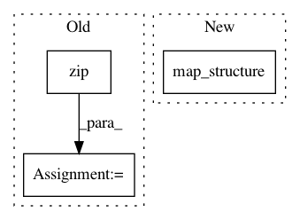

1775e89f262111791fabfd40f80a24f74738fe54,rllib/models/tf/tf_action_dist.py,MultiActionDistribution,logp,#MultiActionDistribution#Any#,371
Before Change
split_list[i] = tf.cast(
tf.squeeze(split_list[i], axis=-1), tf.int32)
log_list = [
distribution.logp(split_x) for distribution, split_x in zip(
self.child_distributions, split_list)
]
return functools.reduce(lambda a, b: a + b, log_list)
@override(ActionDistribution)
After Change
// Remove extra categorical dimension and take the logp of each
// component.
flat_logps = tree.map_structure(map_, split_x,
self.flat_child_distributions)
return functools.reduce(lambda a, b: a + b, flat_logps)
@override(ActionDistribution)
In pattern: SUPERPATTERN
Frequency: 3
Non-data size: 3
Instances
Project Name: ray-project/ray
Commit Name: 1775e89f262111791fabfd40f80a24f74738fe54
Time: 2020-04-28
Author: sven@anyscale.io
File Name: rllib/models/tf/tf_action_dist.py
Class Name: MultiActionDistribution
Method Name: logp
Project Name: deepmind/sonnet
Commit Name: ce11b92597b32bccf9999e94550855e55e02da9b
Time: 2018-10-16
Author: adriap@google.com
File Name: sonnet/python/modules/basic_rnn.py
Class Name: DeepRNN
Method Name: _build
Project Name: ray-project/ray
Commit Name: 1775e89f262111791fabfd40f80a24f74738fe54
Time: 2020-04-28
Author: sven@anyscale.io
File Name: rllib/policy/policy.py
Class Name:
Method Name: clip_action